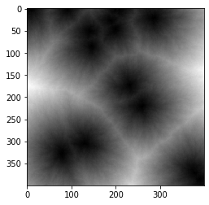
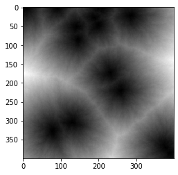

What I've Learned During my Masters
RGB-D Fusion for Segmentation on Indoor data for Autonomous Wheelchair
Research Project - Worked on image+depth fusion techniques with transformer networks and with traditional YOLOV7 for segmentation
on indoor dataset used for autonomous wheelchair scenario
*Code cannot be viewed due to privacy concerns from Professor
GANs (Generative Adversarial Networks) on Limited Data
Explored ways to overcome the problem of limited data by using various GAN methods to increase the dataset by synthetically creating new but similar data.
Maze-Ro Puzzle Game with Procedural Content Generation (PCG)
Used procedural rule generation to randomly create rules and check its fitness through genetic algorithm. This was a team project of two people. My portion of the work was the rule generation through genetic algorithm in C# while my teammate worked on creating the display and scene in unity.


Artistic Images with Dijsktra's Algorithm
Inspired by the various elements in rocks and stones, used Dijkstra's algorithm to create artistic images
from a graph structure....
...
..

 


What I've Learned from DeepLearning.ai Specialization
Emotion Detection Model
Face Recognition Model
Neural Style Transfer
Autonomous Driving using YOLO algorithm
A model built with CNN that detects if a person is happy based on their smiles. This is the first time I have used Keras in Python. The train accuracy is 99% while test accuracy is 97%.
Training set = 600 pictures of size (600,64,64,3)
and
Test-set = 150 pictures of size (10,64,64,3)
What's the difference between face verification and recognition?
Face verification is a simpler task that involves matching the input image with the claimed person's image. It is a 1:1 matching problem!
However, face recognition is a bit more complex. It is matching a given input image across a database of images to find who the particular individual
is. It is a 1:K matching problem!
Both face recognition and verification are applied here with triplet loss function and a pre-trained model to map face images into 128-dimensional
encodings. Numpy,Keras, Tensorflow, pandas, cv2 are used to build this model.
I absolutely LOVE this project as it generates ART with neural networks.
Neural Style Transfer algorithm is used to merge an image's content with another image's style to output unique styled art. A pre-trained model is used to do this task
Content cost function is used using tensorflow. Style cost is computed using Style Matrix( Gram Matrix) and Style Weights. Total cost is the addition of these costs with added weights and Adam optimizer is used.
Libraries used are matplotlib, numpy, pprint, scipy,tensorflow, PIL, etc.
Here, we are mainly creating object detection on a car detection dataset and dealing with bounding boxes
Libraries used : keras,numpy,scipy,matplotlib, tensorflow, pandas,PIL
"You Only Look Once" (YOLO) performs object detection, and then can be applied it to car detection. As YOLO model is very computationally expensive to train, we have loaded pre-trained weights. It is a popular algorithm because it achieves high accuracy while also being able to run in real-time. This algorithm "only looks once" at the image in the sense that it requires only one forward propagation pass through the network to make predictions. After non-max suppression, it then outputs recognized objects together with the bounding boxes.
The YOLO architecture is: IMAGE (m, 608, 608, 3) -> DEEP CNN -> ENCODING (m, 19, 19, 5, 85).
The input is a batch of images, and each image has the shape (m, 608, 608, 3)
The output is a list of bounding boxes along with the recognized classes.
Anchor boxes are chosen by exploring the training data to choose reasonable height/width ratios that represent the different classes.